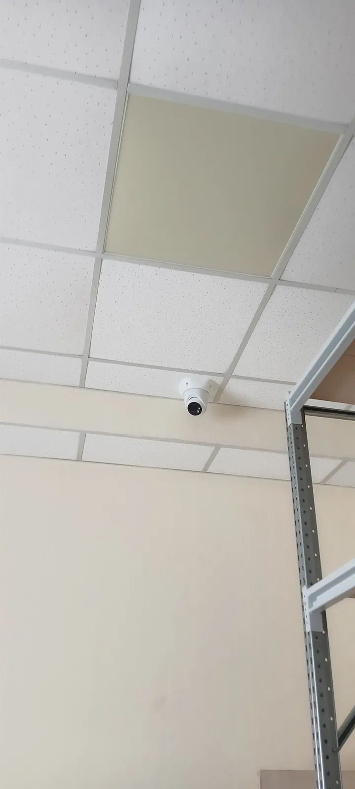

Задача клиента
С чем к нам пришли
Видеонаблюдение нужно для контроля за складом. Важно было обеспечить возможность мониторинга в реальном времени и иметь доступ к записям.
Поставили три камеры внутри склада и настроили просмотр с телефона. Теперь владелец может следить за порядком на складе, не выходя из офиса.

С чем к нам пришли
Видеонаблюдение нужно для контроля за складом. Важно было обеспечить возможность мониторинга в реальном времени и иметь доступ к записям.
Снимки после сдачи работ. Нажмите на фото, чтобы посмотреть крупно.
Полный перечень — что сделали монтажники.
Считаем от задач: по камере на ворота, отдельная — на зону приёмки, на ряды стеллажей и периметр. Точное число — после осмотра, в смете в 3 вариантах.
Да, если камеру над воротами правильно подобрать и поставить: с ИК-подсветкой и под нужным углом.
Рассчитываем архив под вашу задачу — например, чтобы записи хватало до следующей инвентаризации.
3 года на оборудование и 1 год на монтажные работы. Если в гарантийный срок что-то перестало работать — приезжаем и чиним бесплатно.
Оставьте телефон — подберём систему под вашу задачу и пришлём смету в 3 вариантах за 15 минут.